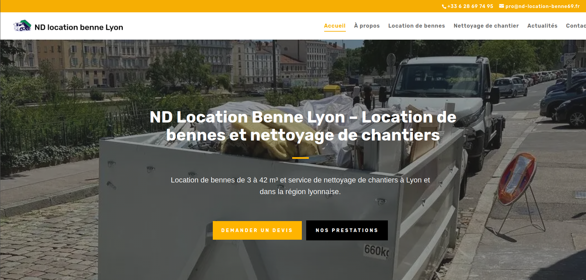
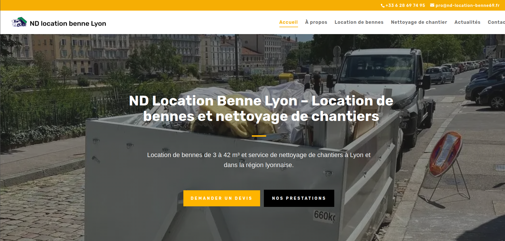

Bosveil Bishop
BTS SIO - Option SISR
BTS SIO - Option SISR
Durant ma formation BTS SIO, j'ai effectué 7 semaines de stage en entreprise, réparties sur les deux années. Ces périodes m'ont permis de mettre en pratique mes compétences dans un contexte professionnel réel et de découvrir le fonctionnement d'une organisation informatique.
Nom de l'entreprise : Elixir Création
Secteur d'activité : Développement web, infra et sécurité de sites internet
Taille : TPE, pas d'employés, engage des stagiaires
Localisation : Vienne
Période de stage : 7 semaines
Service d'accueil : Service Développement Web
Contexte de l'entreprise :
L'environnement de travail était assez classique, on avait des missions que les clients nous donnaient et on devait y répondre, on était plusieurs stagiaires à travailler là-bas, pas forcément des personnes issues de SIO mais aussi de marketing ou bien de la comptabilité. On utilisait principalement des outils comme WordPress et des logiciels d'hébergement.
Maître de stage : Emmanuel Fauveau
Dans le cadre du développement de la nouvelle entité ELIXIR CREATION, j'ai été chargé de concevoir le site web d'une MJC. Le besoin était de fournir une solution rapide à déployer, facile à administrer par des non-techniciens, et hébergée sur notre infrastructure sécurisée. L'enjeu était d'intégrer ce service dans notre DMZ tout en garantissant une expérience utilisateur moderne.
Pour répondre à l'exigence de rapidité, j'ai privilégié une approche Low-Code. Après avoir installé la base de données et WordPress, j'ai utilisé un thème "Starter" et le constructeur Elementor pour structurer les pages (Accueil, Activités, Inscriptions) par glisser-déposer. J'ai intégré des extensions (plugins) pour la gestion d'un calendrier d'événements et la sécurisation du formulaire de Contact.
C2, C4, C5

Le site est pleinement opérationnel et intégré à l'infrastructure d'ELIXIR CREATION. La MJC dispose d'un outil moderne qu'elle peut mettre à jour sans connaissances en programmation.
Métriques :
Au final c'était une bonne expérience même si j'avais des difficultés au début, cela m'a permis d'avoir un avant-goût du monde professionnel et des obstacles auxquels je vais me confronter.
Lorsque que j'avais finis un site sur wordpress je devais ensuite le publier sur internet et obtenir un certificat TLS pour ainsi le rendre accessible pour les clients de l'organisation.
Achat de l'offre d'hébergement et enregistrement du nom de domaine. Choix de la solution O2Switch pour sa simplicité d'utilisation et ses performances.
Configuration du panneau de contrôle O2Switch (cPanel/Panel). Importation des fichiers du site WordPress et configuration de la base de données pour rendre le site fonctionnel en ligne.
C1, C5, C3
 

Le site est désormais accessible 24/7 via son nom de domaine. L'utilisation de l'hébergeur O2Switch et de WordPress a permis une mise en ligne rapide et sécurisée sans nécessiter de compétences en administration serveur avancées.
Cette mission m'a permis de comprendre toute la chaîne de publication web : de la conception en Low Code à l'hébergement chez un tiers. J'ai appris l'importance de la relation entre le nom de domaine, l'hébergeur et le site pour garantir une présence en ligne fluide et sécurisée.
Ces missions en entreprise m'ont permis de découvrir le monde professionnel et de comprendre les enjeux réels d'un service informatique. J'ai appris à travailler en équipe, à respecter des deadlines, et à m'adapter aux besoins changeants d'un projet. Cette expérience a été essentielle pour ma formation et franchement serait à refaire.
Nom de l'entreprise : IS2D Saint Denis
Secteur d'activité : Enseignement/Education
Localisation : Annonay
Période de stage : 5 semaines
Service d'accueil : Support Technique
Contexte de l'entreprise :
Stage effectué au sein de l'Institut Supérieur Saint Denis. L'objectif principal était d'assister l'équipe dans la maintenance du parc (100+ postes), le déploiement automatisé et l'administration de l'infrastructure virtualisée.
Maître de stage : Vincent Millot
Le service informatique devait remettre à niveau plusieurs salles informatiques. L'objectif était de garantir un parc fonctionnel pour les examens, tout en assurant la continuité du service pour les utilisateurs quotidiens.
Utilisation de l'outil MDT pour appliquer une image standardisée. Respect du nommage (ex: B-OF-COM-03) pour l'identification dans le domaine.
Diagnostic des échecs de déploiement (erreurs MDT, problèmes BIOS). Utilisation de diskpart pour nettoyer les disques et réparation de configurations réseau.
C1, C2, C5, C4, C6
L'intégralité des salles a été livrée dans les délais impartis. La standardisation via MDT a permis de réduire le temps de mise en service des postes futurs.
J'ai développé ma capacité d'auto-formation (C6) en apprenant à maîtriser les instructions de déploiement et en documentant les procédures de résolution d'incidents pour mon portfolio.
Dans le but d'internaliser le stockage et le partage de fichiers, je souhaitais déployer une solution Cloud hébergée en interne. J'ai décidé de créer un VM Linux Server sur Proxmox
Création d'une Machine Virtuelle (VM) sous Proxmox. Installation du système d'exploitation Ubuntu Server et configuration réseau (IP, Passerelle, DNS).
Installation et configuration de la suite Nextcloud. Mise en place de la base de données MariaDB, création des utilisateurs et attribution des privilèges via des commandes SQL (CREATE DATABASE, GRANT).
C1,C5,C6
Le serveur Nextcloud est opérationnel sur la VM. La base de données est fonctionnelle et le service est prêt à être utilisé.
J'ai renforcé mes compétences en système Linux. J'avais déjà des bases solide grâce au PPE mais cela m'a permis d'appliquer ces connaissances dans un scénario réel